stat_contour
Contours of 3d data
Details
Aesthetics
The following aesthetics can be used with stat_contour. They are listed along with their default value. All geoms and scales can also use the group aesthetic. Read how this important aesthetic works in scale_group. Typically, you will associate an aesthetic with a variable in your data set. To do this, you use the aes function: stat_contour(aes(x = var)). Scales control the details of the mapping between data and aesthetic properties; after each aesthetic are listed scales that can be used with that aesthetic. The scale documentation will also provide references to help you interpret the default values.
Instead of mapping an aesthetic to a variable in your dataset, you can also set it to a fixed value. See the parameters section for details.
group:
..piece..
New variables produced by the statistic
To use these variables in an aesthetic mapping, you need to surrond them with .., like aes(x = ..output..).
level, z value of contour
Default geom
geom_path. Override with the geom argument: stat_contour(geom="point").
Examples
> volcano3d <- rename(melt(volcano), c(X1="x", X2="y", value="z")) > v <- ggplot(volcano3d, aes(x=x,y=y,z=z)) > v + stat_contour() 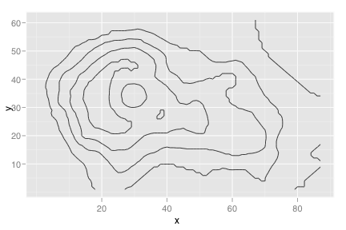 > > # Add aesthetic mappings > v + stat_contour(aes(size = ..level..)) 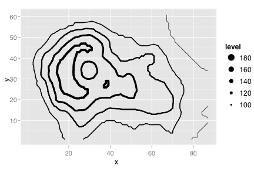 > v + stat_contour(aes(colour = ..level..)) 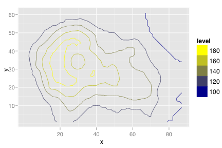 > > # Change scale > v + stat_contour(aes(colour = ..level..), size=2) +(low="brown", high="white") 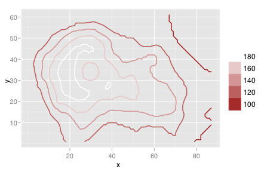 > > v + stat_contour() + scale_z_continuous(breaks=c(100, 150)) 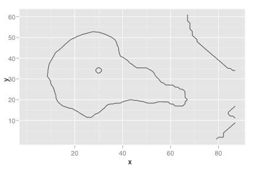 > v + stat_contour(size=0.5) + scale_z_continuous(breaks=seq(95, 195, by=2)) 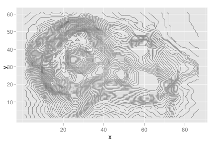 > v + stat_contour() + scale_z_log10() 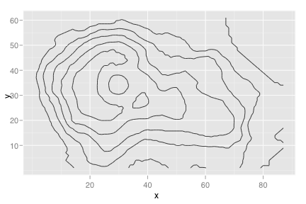 > > # Set aesthetics to fixed value > v + stat_contour(colour="red") 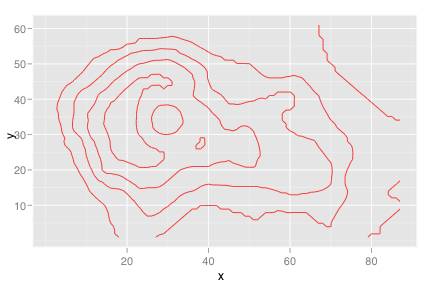 > v + stat_contour(size=2, linetype=4) 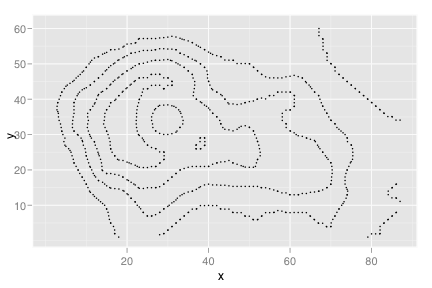 > > # Try different geoms > v + stat_contour(geom="polygon", aes(fill=..level..)) 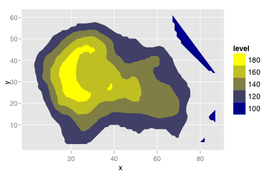 > v + geom_tile(aes(fill=z)) + stat_contour() 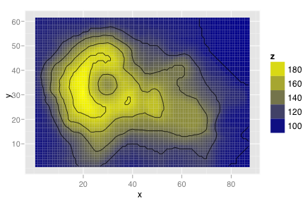 > > # Change coordinate system > v + stat_contour() + coord_polar() 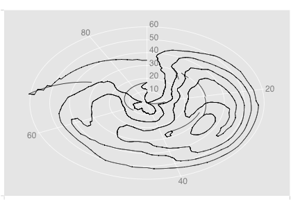 > > # Use qplot instead > qplot(x, y, z, data=volcano3d, geom="contour") 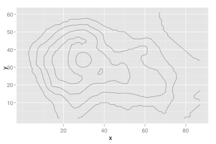 > qplot(x, y, z, data=volcano3d, stat="contour", geom="path")